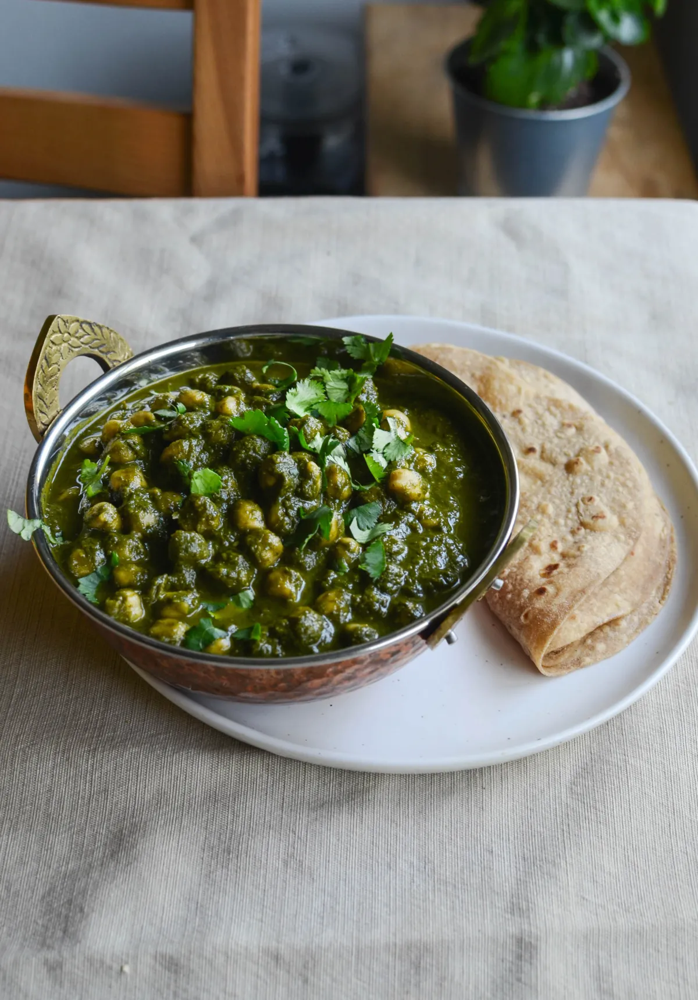

Home
Chana Saag

Favorite Indian Dish
In India, it is common, especially in the state of Odisha, where it is eaten with
pakhala. In the Shree Jagannath Temple of Puri, saag is one of the dishes offered to Jagannath
as part of Mahaprasad. Saag is also common in West Bengal and other regions of North India, where
the most common preparation is saron da saag (mustard plant leaves), which may be eaten with makki di roti,
a yellow roti made with maize flour.[3] Saag gosht or hariyali maans (spinach and mutton) is a common dish
in the North Indian state of Punjab.[4] In Pakistan, it is most commonly eaten in the Punjab province along
with Makki di roti, made from freshly ground corn flour, and fresh buffalo or cow butter or ghee.
Ingredients
- 1 cup dry chickpeas
- 4-5 cups leafy greens *
- 1 cup fresh cilantro
- ½ cup mint (optional)
- 1 tbsp avocado oil or another neutral oil
- ½ tsp cumin seeds
- 1 inch ginger, minced
- 2 garlic cloves, minced
- 2 green chilis, minced
- ½ red onion, chopped
- 1 tomato, diced
- salt to taste
- ½ tsp ground cumin
- ½ tsp ground coriander
- ¼ tsp red chili powder
- ½ tsp amchur (dried mango powder)
- ½ tsp garam masala
- 1 tsp kasoori methi (dried fenugreek leaves)
Directions
- Prepare your dry chickpeas (or use 2 cans, for a total of 3 cups of chickpeas). In an Instant Pot: if using unsoaked chickpeas, pressure cook with 3 cups water + 1 tsp salt for 60 minutes at high pressure. If using soaked chickpeas, pressure cook with 3 cups water + 1 tsp salt for 15 minutes at high pressure.
- Heat oil in a pan over medium heat. Add cumin seeds and let them sizzle for 30 seconds or so before adding ginger, garlic, and green chilis. Stir frequently for 2 minutes.
- Add onion and cook until translucent. Add tomato and a big pinch of salt. Let the tomato juices evaporate a little, until the tomatoes are mushy. Then add the ground spices and gently stir them with everything else.
- Add all the greens and 1 cup water. Cover and cook over medium-low until the greens are soft.
- Let the pan cool off a bit before blending its contents with of cilantro. I blended on medium speed so it was creamy but not too creamy.
- Add the green gravy back to the pan, using 1 cup of water to clean out the blender. Simmer over medium-low, allowing excess water to evaporate until it is at a texture you like.
- Finish with garam masala, crushed kasoori methi, and salt to taste. Stir in the chickpeas. Enjoy with rice or roti!
Notes
*This recipe uses nearly equivalent amounts of spinach and kale. Feel free to use collard greens, chard, mustard greens, broccoli, etc.